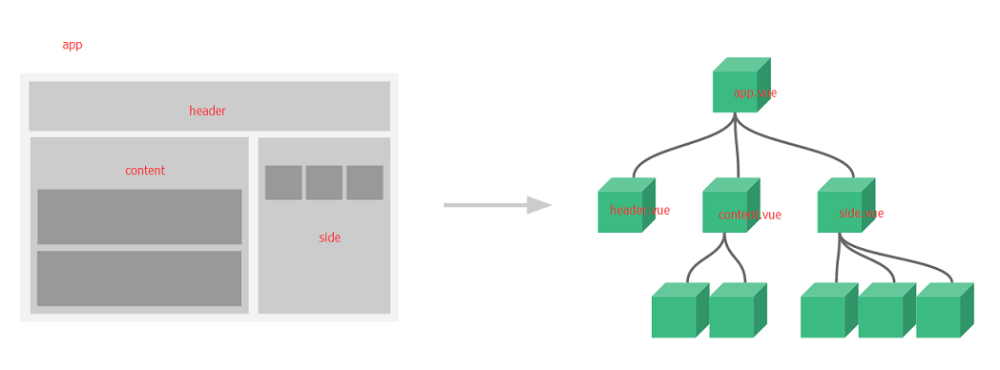

Vue组件深入
关于组件前序章节已经有一个初步的认识。我们将页面分成N个部分的组件，有顶部搜索区域和内容部分，然后内容部分又分成了三个组件，再加上最外层的容器可以看成一个大的组件。这样上下和水平各个组件之间就有了关系。

这章节将会介绍父子组件和兄弟组件之间“通信”，也就是传递数据的方法。另外，会学习针对组件内容部分的更进一步优化使用的插槽。以及关于提高组件和组件内容复用性的优化。还有关于动态组件的相关内容。
在深入组件关系之前，首页我们要了解一个SFC（Single File Component）单文件组件的概念。 在前面代码示例讨论的时候使用的都是原始的文件引入方式，后续将以SFC方式学习。
一个.vue后缀的文件就是一个组件。这样模块化的开发使我们进入了高级模式。